Criação de Sites
Sites modernos, rápidos e responsivos, desenvolvidos sob medida para apresentar sua marca, serviço ou negócio com profissionalismo.
DESENVOLVIMENTO WEB
Crio sites modernos, estratégicos e personalizados para profissionais, empresas e marcas que querem construir uma presença digital forte.
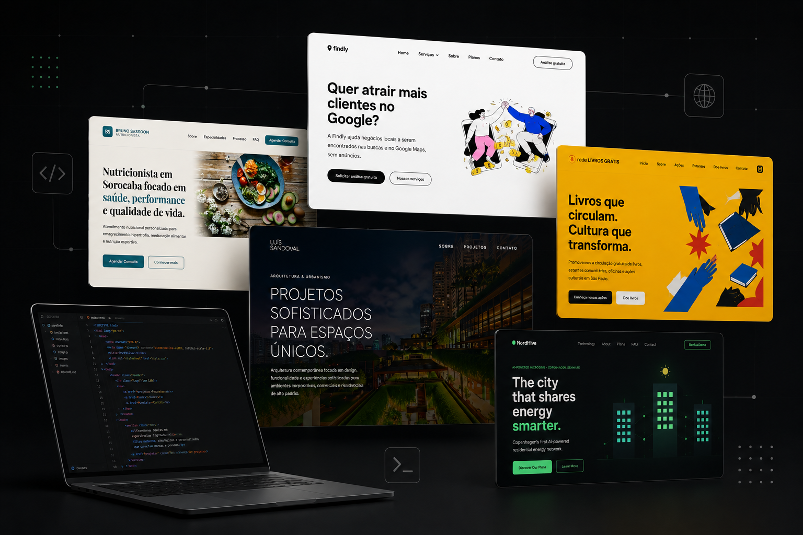
O QUE EU FAÇO
Desenvolvo experiências digitais modernas, estratégicas e personalizadas para transformar ideias em presença digital de verdade.
Sites modernos, rápidos e responsivos, desenvolvidos sob medida para apresentar sua marca, serviço ou negócio com profissionalismo.
Interfaces limpas, modernas e pensadas para proporcionar uma experiência agradável, clara e alinhada ao posicionamento da marca.
Estruturação de sites pensando em mecanismos de busca, SEO local e presença digital para ajudar empresas a serem encontradas.
Integração de recursos inteligentes, automações e soluções com inteligência artificial quando fizer sentido para o projeto.
PROJETOS SELECIONADOS
Uma seleção de experiências digitais desenvolvidas para diferentes profissionais, empresas e projetos.
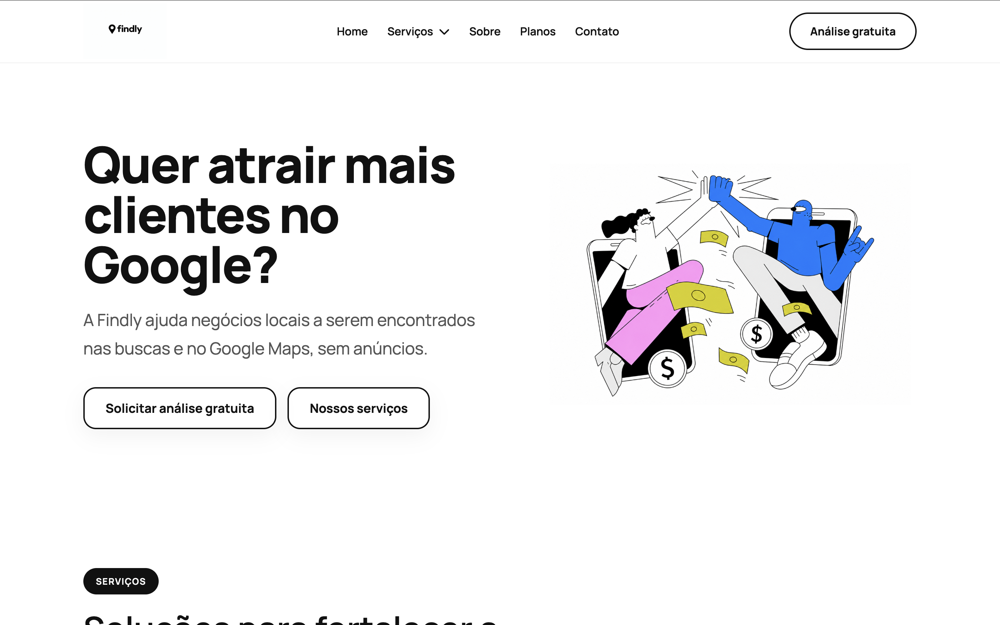
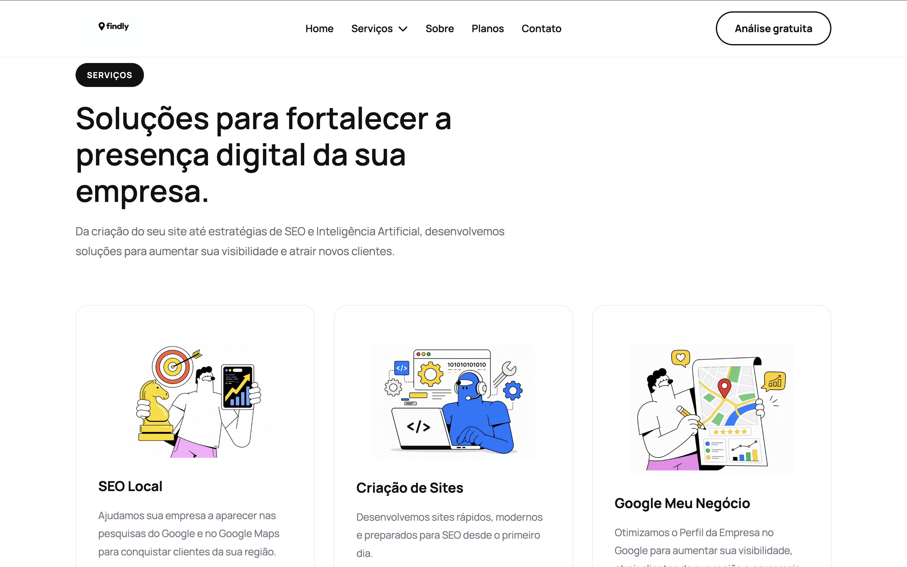
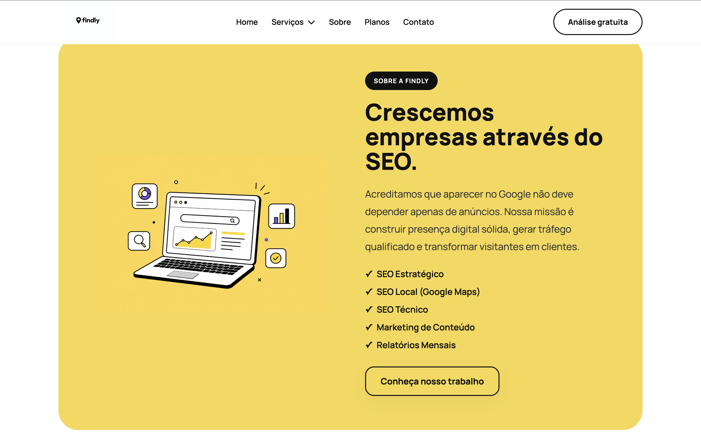
PRESENÇA DIGITAL · SEO LOCAL
Desenvolvimento de uma plataforma voltada para negócios locais que desejam aumentar sua visibilidade no Google e no Google Maps. O projeto combina SEO Local, criação de sites e otimização do Google Meu Negócio em uma experiência digital simples e orientada à geração de novos clientes.
Criar uma presença digital capaz de aumentar a descoberta de negócios locais e facilitar a transformação de visitantes em potenciais clientes.
Estrutura focada em SEO, apresentação clara dos serviços, comunicação objetiva e chamadas para ação direcionadas para descoberta e contato.
Fortalecimento da presença digital, maior clareza na apresentação dos serviços e uma experiência estruturada para transformar visibilidade em oportunidades de negócio.
HTML5, CSS3, JavaScript e Design Responsivo.
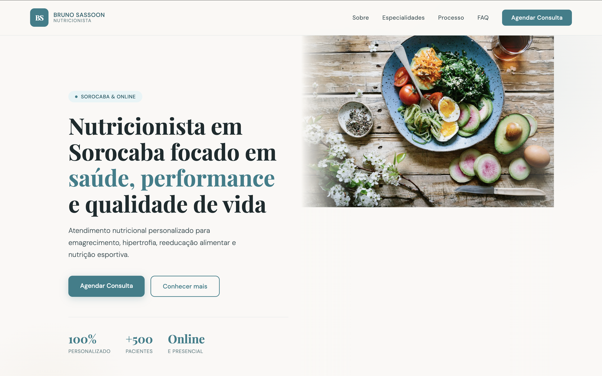
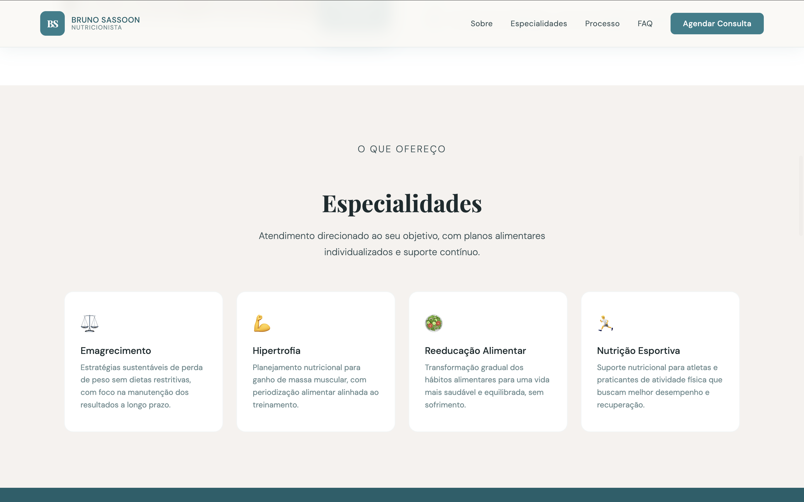
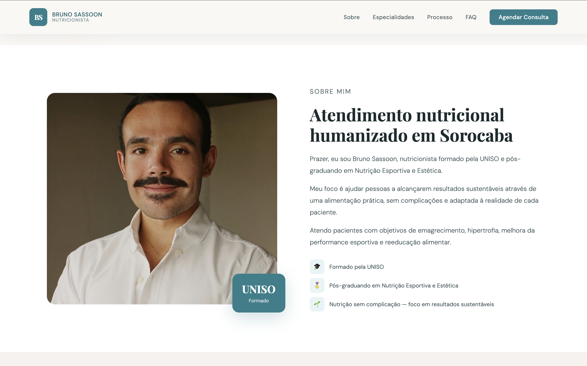
PERSONAL BRANDING · SAÚDE
Criação de uma presença digital profissional para um nutricionista, com foco em transmitir confiança, proximidade e autoridade. O site apresenta formação, especialidades e abordagem de atendimento, conduzindo o visitante até o agendamento de uma consulta.
Construir uma identidade digital profissional capaz de apresentar o especialista, seus diferenciais e sua abordagem de atendimento.
Design editorial, comunicação humanizada, apresentação das especialidades e uma jornada estruturada para levar o visitante do primeiro contato até o agendamento.
Fortalecimento do posicionamento profissional, maior percepção de confiança e uma jornada digital estruturada para facilitar novos agendamentos.
HTML5, CSS3, JavaScript e Design Responsivo.

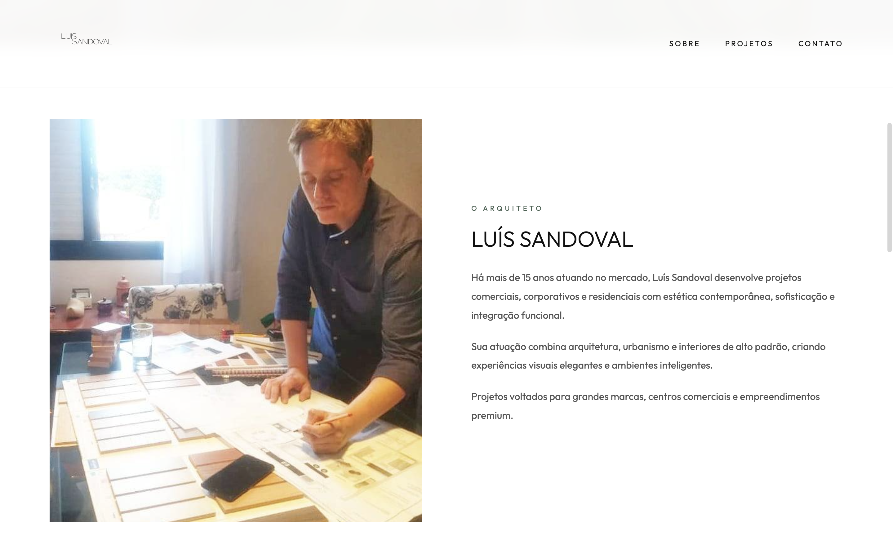
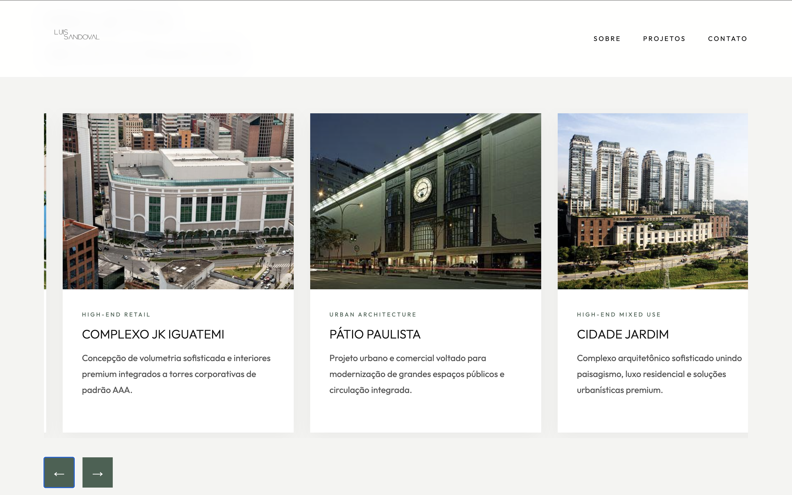
PORTFÓLIO · ARQUITETURA
Desenvolvimento de um portfólio digital sofisticado para apresentar a trajetória, experiência e projetos de um arquiteto. A estrutura prioriza o impacto visual dos projetos e uma navegação minimalista, alinhada ao posicionamento profissional.
Criar uma experiência digital capaz de valorizar projetos arquitetônicos e transmitir o nível de sofisticação do profissional.
Apresentação visual dos projetos, composição editorial, navegação minimalista e uma estrutura pensada para destacar imagens, experiência e posicionamento.
Valorização do trabalho do arquiteto, fortalecimento da autoridade profissional e criação de uma experiência digital compatível com o padrão dos projetos apresentados.
HTML5, CSS3, JavaScript e Design Responsivo.
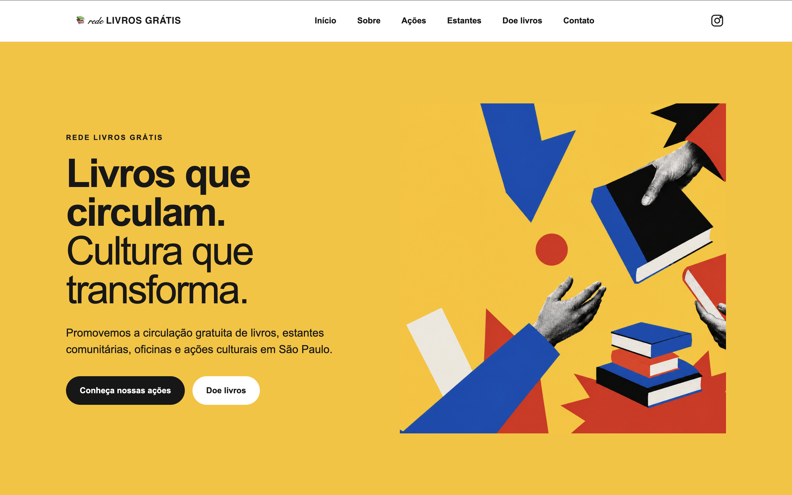
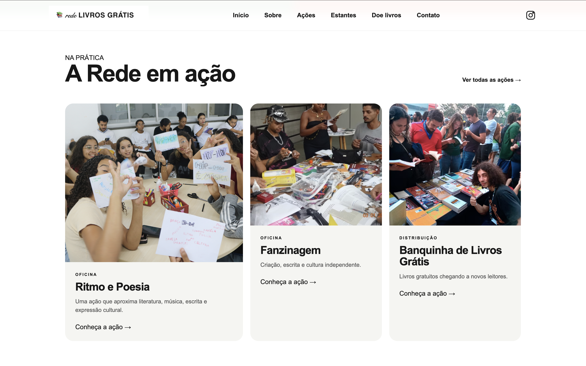
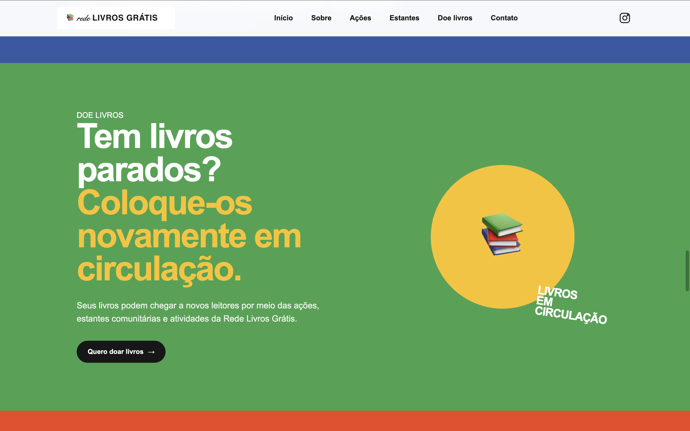
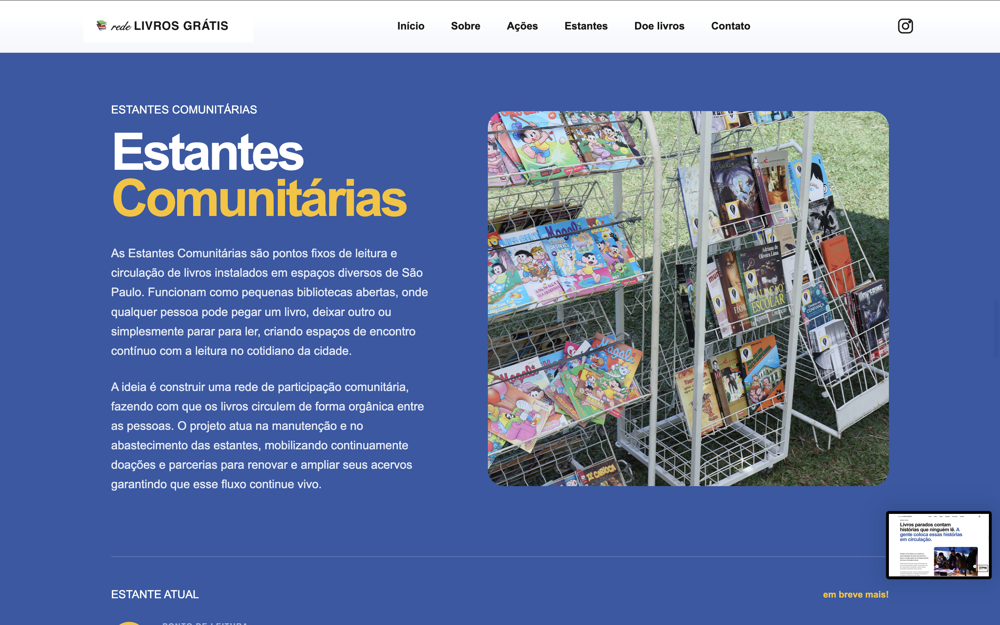
INSTITUCIONAL · CULTURA
Criação de uma identidade digital marcante para uma iniciativa dedicada à circulação gratuita de livros e ao acesso à cultura. O site organiza ações, estantes comunitárias, oficinas e iniciativas de distribuição em uma experiência visual dinâmica e coletiva.
Criar uma plataforma digital capaz de comunicar a proposta da iniciativa e facilitar o acesso às ações culturais.
Identidade visual vibrante, organização das iniciativas, apresentação das ações e uma experiência pensada para estimular descoberta e participação.
Maior clareza na comunicação da iniciativa, valorização da identidade cultural e uma experiência digital mais convidativa para descoberta e participação.
HTML5, CSS3, JavaScript e Design Responsivo.
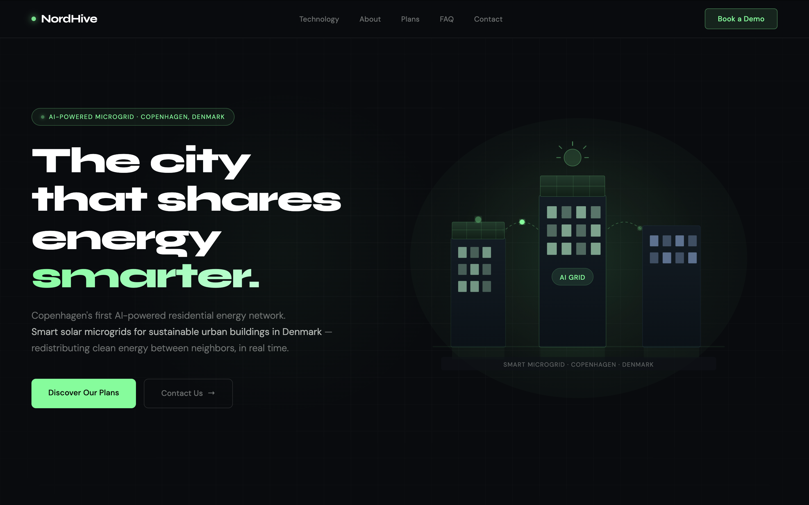
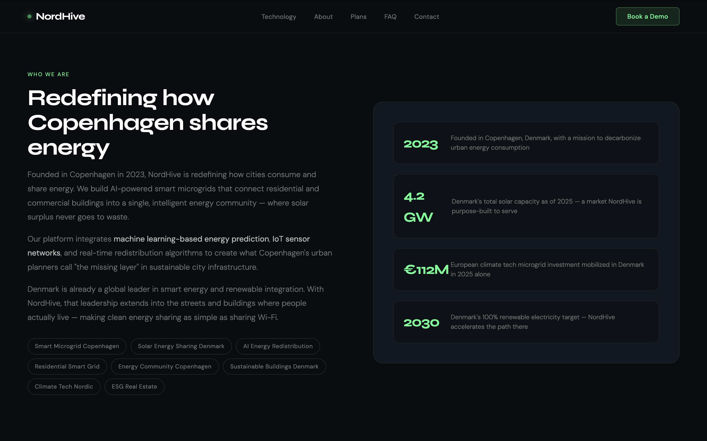
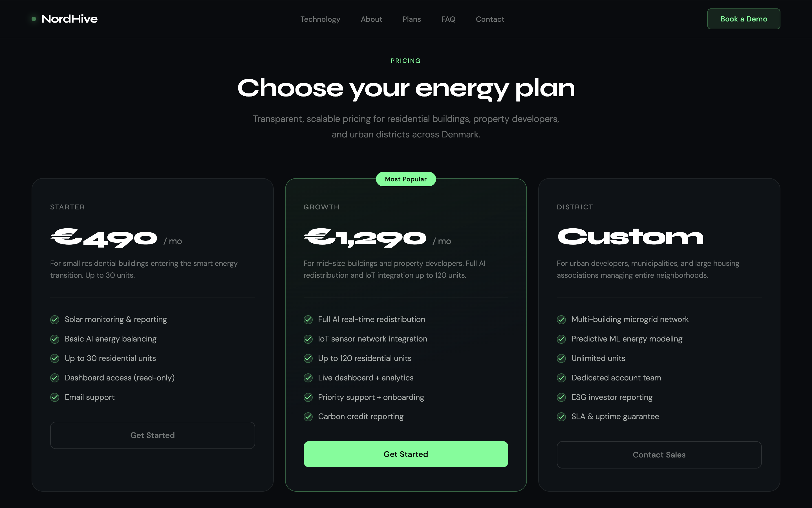
TECNOLOGIA · ENERGIA
Desenvolvimento de uma experiência digital para uma empresa de tecnologia energética focada em smart grids, energia solar e inteligência artificial. O projeto utiliza uma estética tecnológica para apresentar a solução, seus diferenciais e planos.
Apresentar uma solução energética inovadora de maneira clara, moderna e visualmente impactante.
Interface futurista, comunicação orientada à tecnologia, apresentação dos diferenciais da solução e estrutura de conteúdo voltada para explicar planos e benefícios.
Fortalecimento da percepção de inovação, maior clareza na apresentação da solução e uma experiência digital alinhada ao posicionamento tecnológico da empresa.
HTML5, CSS3, JavaScript e Design Responsivo.
Me chamo Ian Lib e sou formado em Produção Multimídia desde 2022. Minha formação me deu uma base sólida em design, comunicação e marketing, que depois aprofundei em Web Design, SEO e Marketing Digital.
Hoje, uno criatividade, tecnologia e estratégia para criar experiências digitais que fortalecem marcas, ampliam sua presença online e ajudam negócios a alcançar seus objetivos.
Cada projeto começa entendendo o negócio, seu público e aquilo que precisa ser alcançado. A partir disso, transformo ideias em soluções digitais claras, modernas e pensadas para gerar resultados reais.
Produção Multimídia, com base em design, comunicação e marketing.
Criação de sites modernos, responsivos e pensados para experiências digitais completas.
Estruturas digitais preparadas para melhorar presença e posicionamento online.
Design, tecnologia e estratégia trabalhando juntos em cada projeto.
COMO EU TRABALHO
Um processo simples e estratégico para transformar uma ideia em uma experiência digital funcional, visualmente forte e preparada para crescer.
Entendo o negócio, o público e o objetivo do projeto antes de começar a construir.
Organizo conteúdo, hierarquia e experiência para criar uma estrutura clara e eficiente.
Transformo a estrutura em uma interface moderna, responsiva e funcional.
Faço os ajustes finais, otimizo a experiência e preparo o projeto para publicação.
ENTRE EM CONTATO
Tem uma ideia, projeto ou oportunidade? Me conte um pouco sobre o que você está pensando.